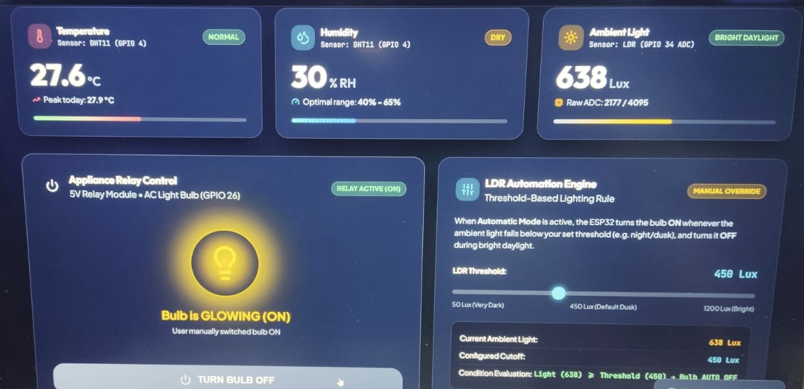

HARDWARE CONVERGENCE & CLOUD TELEMETRY
Task 5: Firebase Hardware Integration
Task 5 represents the culmination of the IoT module: a complete cyber-physical system integrating high-voltage AC load switching, environmental atmospheric sensing (DHT11), and a physical hardware tactile push button with debounce logic—all synchronized in real time with Google Firebase Realtime Database.
Complete Pinout & Component Interfacing
| Component | ESP32 GPIO | Direction / Protocol | Engineering Notes |
|---|---|---|---|
| 230V AC Bulb (Relay Module) | GPIO 5 | Digital Output (Active LOW) | Optoisolated relay switching mains voltage safely |
| DHT11 Sensor (Temp & Humidity) | GPIO 4 | 1-Wire Digital Bidirectional | Calibrated sampling cycle every 2000ms with pullup |
| Tactile Push Button | GPIO 18 | Digital Input (INPUT_PULLUP) | Hardware local toggle override with software debounce |
| System Status LED | GPIO 2 | Digital Output | Pulses when cloud write commits successfully |
Hardware Integration Gallery (Test Bench & Deployment)

📸 Photo 1: Overview of Breadboard, ESP32, and 230V Bulb

📸 Photo 2: Close-up of DHT11 Wiring & Power Rails
.jpeg)
📸 Photo 3: Tactile Push Button Override Switch

📸 Photo 4: Real-Time Firebase Packet Transmission

📸 Photo 5: AC Bulb Successfully Illuminated by Cloud Sync

📸 Photo 6: Final Integrated Hardware Deployment
Arduino C++ Source Code (Firebase ESP32 Hardware Client)
Production firmware utilizing FirebaseESP32.h and DHT.h. Implements stream listeners for real-time bulb toggles while publishing non-blocking environmental telemetry.
ESP32_Firebase_Full_Hardware.ino
/*
* =====================================================================
* Task 5: Firebase Hardware Integration (Bulb, DHT11, Push Button, ESP32)
* Developer: PRAVEEN. A
* Board: ESP32 DevKit V1
* Cloud: Google Firebase Realtime Database
* =====================================================================
*/
#include <WiFi.h>
#include <FirebaseESP32.h>
#include "DHT.h"
// ---------- WiFi & Firebase Credentials ----------
#define WIFI_SSID "protosem"
#define WIFI_PASSWORD "Proto#123"
#define FIREBASE_HOST "praveen-iot-dashboard-default-rtdb.firebaseio.com"
#define FIREBASE_AUTH "YourFirebaseAuthTokenSecret"
// ---------- Pin Definitions ----------
#define RELAY_PIN 5 // 230V AC Bulb Relay
#define DHT_PIN 4 // DHT11 Sensor Data
#define BUTTON_PIN 18 // Manual Push Button
#define STATUS_LED 2 // Onboard Heartbeat LED
#define DHTTYPE DHT11
DHT dht(DHT_PIN, DHTTYPE);
FirebaseData fbdo;
FirebaseAuth auth;
FirebaseConfig config;
// State Tracking Variables
bool currentBulbState = false;
int lastButtonState = HIGH;
unsigned long lastDebounceTime = 0;
const unsigned long debounceDelay = 50;
unsigned long lastTelemetryTime = 0;
const unsigned long telemetryInterval = 3000; // 3 seconds
void setup() {
Serial.begin(115200);
delay(100);
// Initialize Pin Modes
pinMode(RELAY_PIN, OUTPUT);
pinMode(STATUS_LED, OUTPUT);
pinMode(BUTTON_PIN, INPUT_PULLUP);
// Default: Bulb OFF (Active LOW relay -> HIGH = OFF)
digitalWrite(RELAY_PIN, HIGH);
digitalWrite(STATUS_LED, LOW);
// Initialize DHT Sensor
dht.begin();
// Connect to WiFi
Serial.print("Connecting to WiFi");
WiFi.begin(WIFI_SSID, WIFI_PASSWORD);
while (WiFi.status() != WL_CONNECTED) {
delay(500);
Serial.print(".");
}
Serial.println("\nWiFi Connected! IP: " + WiFi.localIP().toString());
// Configure Firebase Client
config.host = FIREBASE_HOST;
config.signer.tokens.legacy_token = FIREBASE_AUTH;
Firebase.begin(&config, &auth);
Firebase.reconnectWiFi(true);
Serial.println("Firebase Realtime Hardware Hub Initialized!");
}
void loop() {
// 1. Read Physical Push Button with Software Debouncing
int reading = digitalRead(BUTTON_PIN);
if (reading != lastButtonState) {
lastDebounceTime = millis();
}
if ((millis() - lastDebounceTime) > debounceDelay) {
if (reading == LOW && lastButtonState == HIGH) {
// Button Pressed! Invert state
currentBulbState = !currentBulbState;
applyBulbState(currentBulbState);
// Synchronize manual state change back to Firebase Cloud
Firebase.setBool(fbdo, "/devices/bulb/status", currentBulbState);
Serial.println("[LOCAL OVERRIDE] Push button pressed -> Bulb: " + String(currentBulbState ? "ON" : "OFF"));
}
}
lastButtonState = reading;
// 2. Poll Firebase Cloud for Remote Dashboard Changes
if (Firebase.getBool(fbdo, "/devices/bulb/status")) {
bool cloudState = fbdo.boolData();
if (cloudState != currentBulbState) {
currentBulbState = cloudState;
applyBulbState(currentBulbState);
Serial.println("[CLOUD SYNC] Remote Dashboard command -> Bulb: " + String(currentBulbState ? "ON" : "OFF"));
}
}
// 3. Periodic Environmental Telemetry Publication (DHT11)
if (millis() - lastTelemetryTime > telemetryInterval) {
lastTelemetryTime = millis();
float h = dht.readHumidity();
float t = dht.readTemperature();
if (!isnan(h) && !isnan(t)) {
Firebase.setFloat(fbdo, "/telemetry/temperature", t);
Firebase.setFloat(fbdo, "/telemetry/humidity", h);
Serial.printf("[TELEMETRY PUSH] Temp: %.1f °C | Humidity: %.1f %%\n", t, h);
// Quick pulse on status LED indicating successful upload
digitalWrite(STATUS_LED, HIGH);
delay(30);
digitalWrite(STATUS_LED, LOW);
}
}
}
void applyBulbState(bool state) {
// Active LOW relay logic: LOW = Relay ON, HIGH = Relay OFF
digitalWrite(RELAY_PIN, state ? LOW : HIGH);
}